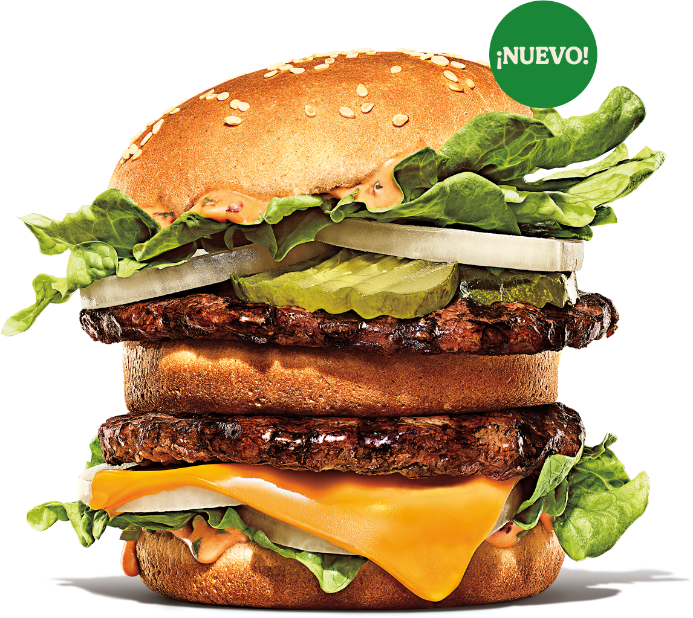

Big King® Vegetal
Con sus ingredientes clásicos y la inconfundible salsa Big King®, lo único que podíamos añadirle es su versión con carne 100% vegetariana. Disfruta de toda la esencia de nuestra parrilla y pregúntate cómo es posible disfrutar el doble, con una sola burger.